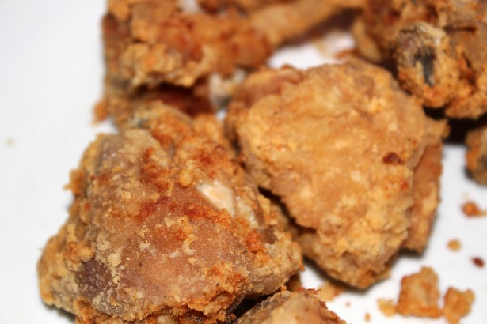

This easy 3-step garlic chicken fried chicken tenders recipe makes crispy, delicious chicken pieces.
2 teaspoons garlic powder, or to taste
1 teaspoon ground black pepper
1 teaspoon salt
1 teaspoon paprika
½ cup seasoned bread crumbs
1 cup all-purpose flour
½ cup milk
1 egg
4 skinless, boneless chicken breasts halves - pounded thin
1 cup oil for frying, or as needed
In a shallow dish, mix together the garlic powder, pepper, salt, paprika, bread crumbs and flour. In a separate dish, whisk together the milk and egg.
Heat the oil in an electric skillet set to 350 degrees F (175 degrees C). Dip the chicken into the egg and milk, then dredge in the dry ingredients until evenly coated.
Fry chicken in the hot oil for about 5 minutes per side, or until the chicken is cooked through and juices run clear. Remove from the oil with a slotted spatula, and serve.